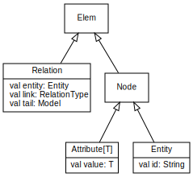

reqT Documentation
Contents
- Hello reqT
- Introduction to reqT
- Tutorial (pdf)
- The reqT metamodel
- reqT Cheat Sheet (pdf)
- Publications and presentations
- Differences between reqT v3 and v2
- Old documentation for reqT v2
Hello reqT
- Download reqT and start the reqT console with this command:
java -jar reqT.jar - Type this into the reqT console (or copy-paste it using Ctrl+C and right click):
val m = Model(Feature("hi") has (Spec("hello world"), Prio(1))) -
Type this to edit the model:
edit(m)
Introduction to reqT
reqT is a scalable requirements modelling tool. With reqT you can create, edit, analyse and visualize requirements, ranging from very small models containing only a few sketchy elements to very large models with thousands of requirements.
In reqT, requirements are represented in a textual language that enables you to, for example, paste models into emails, version-control your models using git or svn, store your models at GitHub or Bitbucket, and other things you normally do with code.
Creating reqT models
A reqT Model contains a sequence of elements. Elements can be one of the following three types:
- entities, such as
Feature("x")orStakeholder("a") - attributes, such as
Prio(1)orSpec("Hello reqT!") - relations, such as
Feature("x") has Prio(1)orFeature("x") requires Feature("y")
Here is an example of a model that expresses different feature benefits according to two different stakeholders:
There are many different types of entities, attributes and relations, as listed here. You can use any combination of the available entities, attributes and relations as long as you follow these rules:
- An entity must have an id, e.g.
Feature("myId"). - An attribute must have a value of a specific type.
- String attributes must have a string, e.g.
Spec("My detailed specification")orGist("My short description."). - Int attributes must have an integer, e.g.
Prio(1)orMax(100).
- String attributes must have a string, e.g.
- A relation must connect and entity with an element or a sequence of elements within parenthesis via a link of some relation type, e.g. the relation
Feature("x") has Prio(1)connects aFeatureentity with id "x" to aPrioattribute via a link of typehas.
The reqT Scala-embedded DSL
A requirements model in reqT is represented by a language that is embedded in Scala, a so called internal or embedded Domain-Specific Language DSL. This means that your models are represented using Scala classes in an efficient data structure that can be manipulated using concise and powerful Scala scripts.
The Scala class hierarchy of the Elem, Node, Relation, Attribute and Entity classes are shown below.

Elem is the superclass of Node and Relation. A Node can be either an Attribute or an Entity. A Relation has three value fields: entity, link and tail. The tail of a relation is a new Model that recursively can contain zero or more objects of type Elem.
You can check out the different available elements of the reqT metamodel here.
When to use which element of the reqT metamodel?
The reqT metamodel gives you a large bag of requirements-related concepts that you can combine freely in many different ways, as long as you follow some basic rules. What is a good or bad requirements model is determined by the context and there is no universal "truth" about the best way to model. However, here is some advice that you may want to follow:
- Some parts of your requirements model may need to be more elaborated than other parts, as your requirements may be more or less risky to be badly implemented downstream.
- If you work on modelling intentions (goals) and attach rationale (why) to your models, the risk for bad implementation is often reduced. Use the
Goalentity and/or theWhyattribute in your reqT models. - If you include examples in combination with intention and rationale, it is more likely that your models will be interpreted in a relevant way in downstream development. You can use the
Exampleattribute, as shown in the model below with a feature that includes information on both goal (why), a product level specification, as well as an illustrative example:
After this introduction do the reqT Tutorial Lab 1 (pdf).
--- End of Introduction ---
Differences between reqT v3 and v2
Version 3 of reqT is a complete rebuild from scratch and many things have been improved and generalized compared to v2, while some things still remains to be re-implemented (depending on user wishes). This section is intended for those who want to migrate old v2 reqT models, scripts and examples from old documentation to reqT v3.
The main differences between reqT v3 and v2 are:
-
Recursive Models. The upper layers of the metamodel is generalized to allow for recursive entity-relation-attribute modelling where models can contain models of arbitrary depth. The old v2 special-case attribute Submodel is dropped and now all relations link to a submodel that recursively can contain attributes, entities and relations to submodels.
Deprecated usage:Model(Stakeholder("a") has Submodel(Feature("x") has Prio(1))) //this is old reqT v2Use this instead:
Model(Stakeholder("a") has (Feature("x") has Prio(1))) -
The has relation. In v3 the has relation can connect any element to an entity including entities and relations, not only attributes. Thus the old v2 owns relation is dropped, as you can use the has relation instead in v3. In v2 the has relation is special as it only can link to attributes and the only way to connect attributes to entities in v2 is to use the has relation.
Deprecated usage:Model(Product("p") owns Feature("x")) //this is old reqT v2Use this instead:
Model(Product("p") has Feature("x")) -
New entities, relations and attributes. The metamodel has undergone several changes. You can investigate the new medamodel using the new GUI, which is started using the
editcommand in the reqT console. In the GUI you can use the Metamodel menu to investigate the available elements. -
Paths. The forward slash operator / is used in v3 instead of the old bang operator ! to construct paths in a more intuitive way. Paths are also generalized to not just follow the has relation via the old Submodel attribute, but in v3 all paths can include a relation type, e.g.
Stakeholder("a").requires/Feature("x").has/Prio -
Model operators. The basic add operator + and the concatenate operator ++ works as before, but many of the other operators have been changed, removed or replaced by a named method. The old restrict operator / is now used for path construction. Instead the operator * is used as restrict operator with the semantic of recursively selecting any submodel that contains the right hand selector. You can see the implementation of model separator operators here and the implementation of the isMatch operator =*= here.
-
Implementation using metaprogramming. In v3 the metamodel of reqT is now expressed in reqT itself using the bootstrap entity Meta and the relation superOf. You can see the code of the metamodel here . The reqT metamodel is used to genrate Scala code that implements the entities, relations and attributes of the reqT DSL using Scala case classes, as seen in the generated code here .
Publications and presentations on reqT v2
The documents below explain the background of reqT and give examples of usage in reqT v2. Check out the differences between reqT v3 and reqT v2 before you try the examples in the below documents in reqT v3. If examples does not work it in v3 it is due to limitations in backward compatibility.
| reqT.org – Towards a Semi-Formal, Open and Scalable Requirements Modeling Tool | Paper pdf Presentation pdf Presentation pptx | REFSQ2013 |
| Flexible Requirements Modeling with reqT – a hands-on tutorial | Presentation pdf | SiREN2013 |
| reqT.org – A Scala DSL for Constraint-based Requirement Engineering using JaCoP | Presentation pdf | SweConsNet2013 |
Old reqT v2 documents
The documents below explain the background of reqT and give examples of usage in reqT v2. Check out the differences between reqT v3 and reqT v2 before you try the examples in the below documents in reqT v3. If an example does not work in v3, it is due to limitations in backward compatibility.
{kind=link}